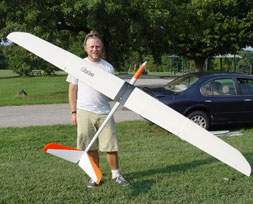
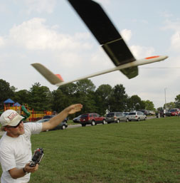

The Citation was a short-lived club plane manufactured in the mid-to-late 1990s by the Bluegrass Soaring Society. It has an SD7080 airfoil and in speaking with the designers, it is essentially a Super V with a few modifications. Coming in far heavier than anything I had previously flown (~75oz), its amazing how well this bird can float! My first flight with it got me a 12 minute flight, thus endearing it to me immediately.
The wing is bagged fiberglass over "grey foam" with an endgrain balsa spar. The fuselage is also all completely fiberglass with what appears to be a gelcoat of some sort. This plane has absolutely no carbon fiber that I can tell. It uses two steel wing rods for the tips.
Much thanks goes out to Gordy Stahl, who has entrusted this plane to me on a permanent-loan basis. It was his primary ship for a number of years, and has been hauled out of retirment to give me something to fly after my Allegro-Lite met an unfortunate end.
 